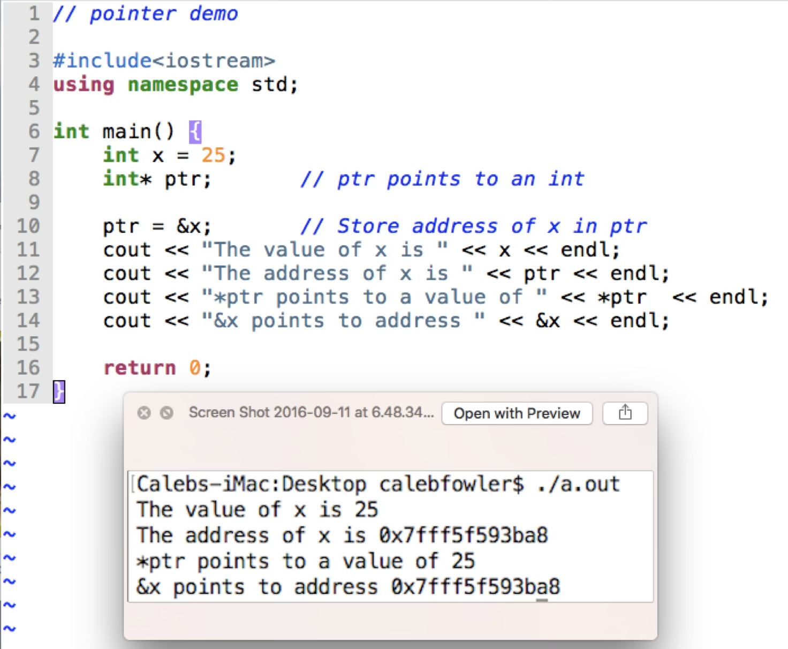
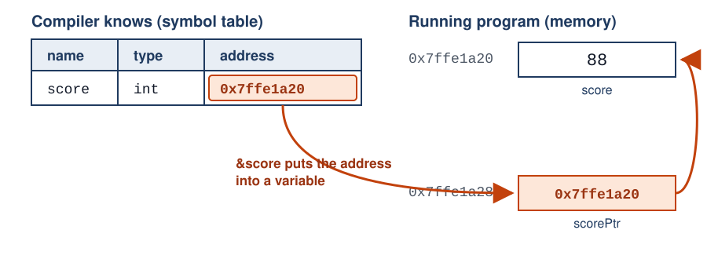
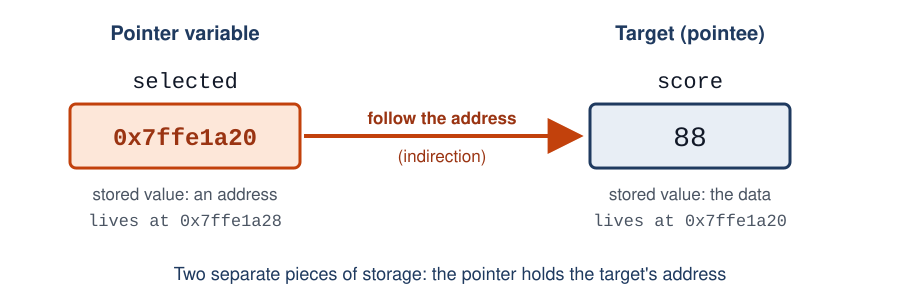

Introduction to C++
std::array


| Before selection | Runtime choice | After operation |
|---|---|---|
regular = 40 |
target regular |
regular = 35 |
sale = 28 |
target sale |
sale = 23 |
| Need | Prefer |
|---|---|
| Store a value | ordinary variable |
| Require another name for an existing object | reference |
| Represent address semantics or no target | pointer |
A pointer may be used only when it identifies:
& produces the address of an object| Part | Meaning |
|---|---|
int |
target type |
* |
pointer declarator |
scorePtr |
pointer variable name |
first is an int pointersecond is an ordinary intnullptrnullptr deliberately represents no targetnullptr over NULL or 0| Pointer state | Meaning | Dereference? |
|---|---|---|
| valid address | identifies a live target | yes |
nullptr |
deliberately identifies no target | no |
| uninitialized | indeterminate value | no |
| dangling | holds an address, but the target’s lifetime has ended | no |
scorePtr → address of score → 88
* follows the stored address to the target*scorePtr gives the target’s value, 88| Code | Symbol and context | Meaning |
|---|---|---|
int* ptr; |
* in a declaration |
ptr is a pointer to int |
*ptr = 95; |
* before one operand |
dereference: follow the address |
score * 2 |
* between two operands |
multiplication |
ptr = &score; |
& before one operand |
address of score |
int& alias = score; |
& in a declaration |
alias is a reference to score (Week 5) |
| Expression | Result |
|---|---|
value |
target value |
&value |
target address |
ptr |
stored address |
*ptr |
value reached through ptr |
score changes from 88 to 95scorePtr continues to store the same addresspoints?*ptr?ptr changed?ptr = &second; changes the target*ptr = 25; would change the current target’s valueptr is now dangling: it contains an address but has no live targetnullptrCreate a simple program that declares:
int variables and one pointer to an intstring variables and one pointer to a stringUsing the pointer variables only, display:
nullptrnullptrptr is uninitialized, so dereferencing it has undefined behaviordouble variable.nullptr.ptr = &value compared with *ptr = value?CISP 360 · Fowler